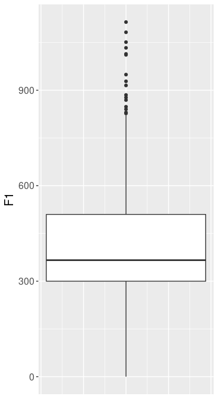

5 Summary Statistics
Für dieses Kapitel benötigen Sie die folgenden Packages und den folgenden Data Frame:
library(tidyverse)
library(magrittr)
url <- "http://www.phonetik.uni-muenchen.de/~jmh/lehre/Rdf"
vdata <- read.table(file.path(url, "vdata.txt"))Wenn man sich einen Überblick über Daten verschaffen möchte, sind sogenannte summary statitics (deskriptive Statistiken) häufig hilfreich. Zu solchen deskriptiven Werten zählen z.B. das arithmetische Mittel (Mittelwert), Median, Varianz, Standardabweichung, Minimum, Maximum, usw. Hier zeigen wir zunächst wie man solche Werte ohne Funktionen aus dem tidyverse berechnen kann. Da R eine Statistik-Software ist, sind solche Basis-Funktionen wie zur Berechnung des Mittelwerts immer verfügbar. Im Folgenden demonstrieren wir die wichtigsten Funktionen zur Berechnung von summary statistics anhand der F1-Werte in vdata:
## [1] 407.3## [1] 366## [1] 21255## [1] 145.8## [1] 0## [1] 1114## [1] 0 1114## 25%
## 300## 75%
## 509.8## [1] 209.85.1 Mittelwert & Median
Das arithmetische Mittel wird berechnet, indem man die Summe einer Anzahl \(n\) an Zahlen bildet, und diese Summe dann durch die Anzahl \(n\) teilt. Hier ist ein sehr einfaches Beispiel:
## [1] 15## [1] 5## [1] 3## [1] 3Der Median hingegen ist die mittig liegende Zahl in einer sortierten Zahlenreihe. Nehmen wir wieder obiges Beispiel (die Zahlen sind bereits aufsteigend sortiert):
## [1] 1 2 3 4 5## [1] 3Bei einer geraden Anzahl von Zahlen berechnet man den Median als den Mittelwert der zwei mittig liegenden Werte, zum Beispiel:
## [1] 3.5## [1] 3.5Der Median ist robuster gegen sogenannte Ausreißer (engl. outlier) als der Mittelwert. Ausreißer sind Datenpunkte, die deutlich extremer sind als die Mehrheit der Datenpunkte. Hier wieder ein einfaches Beispiel:
## [1] 1 2 3 4 5 100## [1] 19.17## [1] 3.5Die Zahl 100 ist ganz offensichtlich ein Ausreißer im Vektor zahlen. Der Mittelwert ist wegen dieses Ausreißers jetzt um ein Vielfaches höher als vorher, während der Median sich nur leicht verändert hat.
5.2 Varianz & Standardabweichung
Varianz und Standardabweichung sind verwandte Maße für die Streuung von Werten um ihren Mittelwert. Genauer gesagt ist die Varianz die Summe der quadrierten Abweichungen der Messwerte von ihrem Mittelwert geteilt durch die Anzahl der Messwerte minus 1, während die Standardabweichung die Quadratwurzel der Varianz ist. Am folgenden Beispiel können Sie nachvollziehen, wie man die Varianz und Standardabweichung “händisch” berechnet:
## [1] 12.4## [1] 0.16 40.96 134.56 88.36 21.16## [1] 5## [1] 285.2## [1] 71.3## [1] 71.3Um jetzt die Standardabweichung daraus zu berechnen, die in der Statistik viel häufiger verwendet wird als die Varianz, brauchen wir nur noch die Quadratwurzel aus der Varianz zu ziehen:
## [1] 8.444## [1] 8.4445.3 Quantile
Ein Quantil teilt Datenpunkte so auf, dass ein bestimmter Teil der Datenpunkte unterhalb des Quantils liegen. Quantil ist ein Überbegriff; je nachdem in wie viele Stücke man die Datenpunkte aufteilt, sagt man auch Perzentil (100 Stücke) oder Quartil (4 Stücke). Der Median ist ebenfalls ein Quantil, denn 50% der Daten liegen immer unter dem Median. In R berechnet die Funktion quantile() die Quantile. Die Funktion bekommt zuerst die Datenpunkte (also einen numerischen Vektor) und anschließend die Proportion der Datenpunkte, die unter dem zu berechnenden Wert liegen soll. Wichtige Quantile sind das erste und dritte Quartil, also die Schwellwerte, unter denen ein Viertel bzw. drei Viertel aller Datenpunkte liegen.
## 25%
## 300## 75%
## 509.8## [1] 209.8Die Differenz zwischen dem ersten und dritten Quartil wird auch interquartiler Bereich oder Interquartilsabstand (interquartile range) genannt und kann mit der Funktion IQR() berechnet werden.
5.4 Beispiel Boxplot
Ein Boxplot enthält viele der deskriptiven Informationen, die wir bis jetzt behandelt haben:
- Median: Der Strich innerhalb der Box ist der Median.
- Box: Die Box umfasst die mittleren 50% aller Datenpunkte. Das untere Ende der Box ist das erste Quartil (Q1), das obere Ende ist das dritte Quartil (Q3). Das heißt die Box ist genauso groß wie der Interquartilsabstand.
- Whiskers: Die Whiskers erstrecken sich vom Q1 und vom Q3 aus zu dem niedrigsten/höchsten Datenpunkt, der innerhalb von
1.5 * IQRliegt. Diese Berechnung der Länge der Whiskers als1.5 * IQRgilt für Boxplots, die mitggplot2erstellt wurden, aber nicht jeder Boxplot wird so berechnet. - Punkte: Ausreißer, also alle restlichen Datenpunkte, die nicht in der Box und den Whiskers enthalten sind.
Hier sehen Sie den Boxplot für F1 aus dem Data Frame vdata:

Wie man diesen Boxplot erstellt, erfahren Sie später in diesem Kurs.